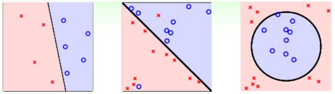
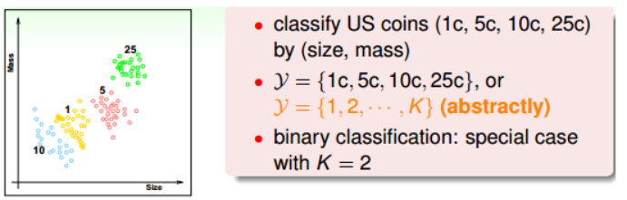
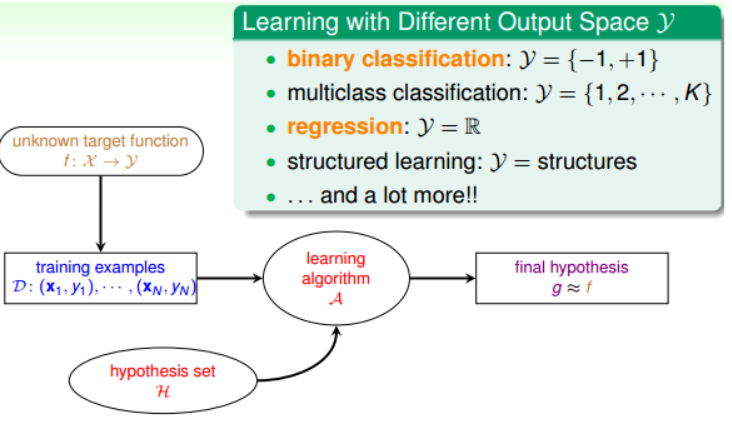
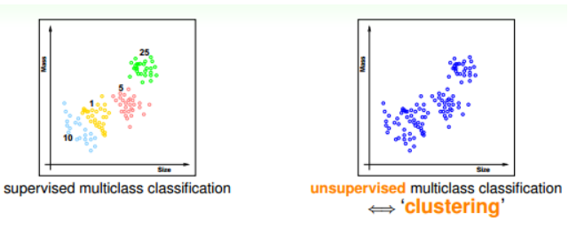
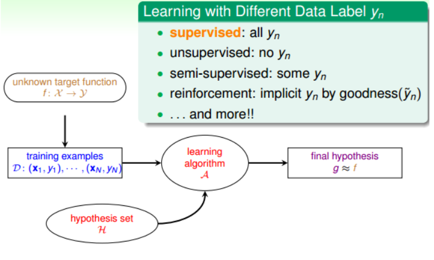
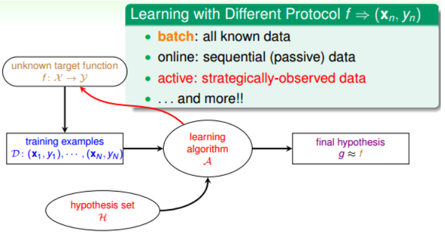
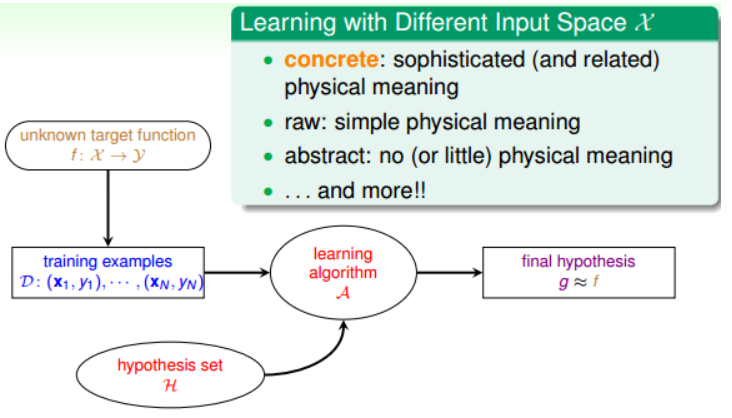
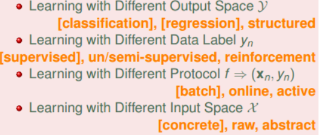

上節課我們主要介紹了解決線性分類問題的一個簡單的方法：PLA。 PLA 能夠在平面中選擇一條直線將樣本資料完全正確分類。而對於線性不可分的情況，可以使用 Pocket Algorithm 來處理。本節課將主要介紹一下機器學習有哪些種類，並進行歸納。
# Learning with Different Output Space Y
我們在上節課引入的銀行根據使用者個人情況判斷是否給他發信用卡的例子，這是一個典型的二元分類 binary classification 問題。也就是說輸出只有兩個，一般 y={-1, +1}，-1 代表不發信用卡（負類），+1 代表發信用卡（正類）。
二元分類的問題很常見，包括信用卡發放、垃圾郵件判別、患者疾病診斷、答案正確性估計等等。二元分類是機器學習領域非常核心和基本的問題。二元分類有線性模型也有非線性模型，根據實際問題情況，選擇不同的模型。

除了二元分類，也有多元分類 Multiclass Classification 問題。顧名思義，多元分類的輸出多於兩個，y={1, 2, … , K}, K>2 一般多元分類的應用有數位識別、圖片內容識別等等。

二元分類和多元分類都屬於分類問題，它們的輸出都是離散值。二對於另外一種情況，比如訓練模型，預測房屋價格、股票收益多少等，這類問題的輸出 y=R，即範圍在整個實數空間，是連續的。這類問題，我們把它叫做回歸 Regression 。最簡單的線性回歸是一種典型的回歸模型。
除了分類和回歸問題，在自然語言處理等領域中，還會用到一種機器學習問題：結構化學習 Structured Learning 。結構化學習的輸出空間包含了某種結構在裡面，它的一些解法通常是從多分類問題延伸而來的，比較複雜。
簡單總結一下，機器學習按照輸出空間劃分的話，包括二元分類、多元分類、回歸、結構化學習等不同的類型。其中二元分類和回歸是最基礎、最核心的兩個類型，也是課程主要介紹的部分。

# Learning with Different Data Label yn
如果我們拿到的訓練樣本 D 既有輸入特徵 x，也有輸出 yn，那麼我們把這種類型的學習稱為監督式學習 Supervised Learning 。監督式學習可以是二元分類、多元分類或者是回歸，最重要的是知道輸出標籤 yn。與監督式學習相對立的另一種類型是非監督式學習 Unsupervised learning 。非監督式學習是沒有輸出標籤 yn 的，典型的非監督式學習包括：聚類 clustering 問題，比如對網頁上新聞的自動分類；密度估計，比如交通路況分析；異常檢測，比如使用者網路流量監測。通常情況下，非監督式學習更複雜一些，而且非監督的問題很多都可以使用監督式學習的一些演算法思想來實現。

介於監督式和非監督式學習之間的叫做半監督式學習 Semi-supervised Learning 。顧名思義，半監督式學習就是說一部分資料有輸出標籤 yn，而另一部分資料沒有輸出標籤 yn。在實際應用中，半監督式學習有時候是必須的，比如醫藥公司對某些藥物進行檢測，考慮到成本和實驗人群限制等問題，只有一部分資料有輸出標籤 yn。
監督式、非監督式、半監督式學習是機器學習領域三個主要類型。除此之外，還有一種非常重要的類型：增強學習 Reinforcement Learning 。增強學習中，我們給模型或系統一些輸入，但是給不了我們希望的真實的輸出 y，根據模型的輸出回饋，如果回饋結果良好，更接近真實輸出，就給其正向激勵，如果回饋結果不好，偏離真實輸出，就給其反向激勵。不斷通過 “回饋 - 修正” 這種形式，一步一步讓模型學習的更好，這就是增強學習的核心所在。
增強學習可以類比成訓練寵物的過程，比如我們要訓練狗狗坐下，但是狗狗無法直接聽懂我們的指令 “sit down”。在訓練過程中，我們給狗狗示意，如果它表現得好，我們就給他獎勵，如果它做跟 sit down 完全無關的動作，我們就給它小小的懲罰。這樣不斷修正狗狗的動作，最終能讓它按照我們的指令來行動。實際生活中，增強學習的例子也很多，比如根據使用者點擊、選擇而不斷改進的廣告系統。
簡單總結一下，機器學習按照資料輸出標籤 yn 劃分的話，包括監督式學習、非監督式學習、半監督式學習和增強學習等。其中，監督式學習應用最為廣泛。

# Learning with Different Protocol f(xn,yn)
按照不同的協議，機器學習可以分為三種類型：
Batch LearningOnlineActive Learning
batch learning 是一種常見的類型。 batch learning 獲得的訓練資料 D 是一批的，即一次性拿到整個 D，對其進行學習建模，得到我們最終的機器學習模型。 batch learning 在實際應用中最為廣泛。
online 是一種線上學習模型，資料是即時更新的，根據資料一個個進來，同步更新我們的演算法。比如線上郵件過濾系統，根據一封一封郵件的內容，根據當前演算法判斷是否為垃圾郵件，再根據使用者回饋，及時更新當前演算法。這是一個動態的過程。之前我們介紹的 PLA 和增強學習都可以使用 online 模型。
active learning 是近些年來新出現的一種機器學習類型，即讓機器具備主動問問題的能力，例如手寫數字識別，機器自己生成一個數字或者對它不確定的手寫字主動提問。 active learning 優勢之一是在獲取樣本 label 比較困難的時候，可以節約時間和成本，只對一些重要的 label 提出需求。
簡單總結一下，按照不同的協議，機器學習可以分為 batch , online , active 。這三種學習類型分別可以類比為：填鴨式，老師教學以及主動問問題。

# Learning with Different Input Space X
上面幾部分介紹的機器學習分類都是根據輸出來分類的，比如根據輸出空間進行分類，根據輸出 y 的標記進行分類，根據取得資料和標記的方法進行分類。這部分，我們將談談輸入 X 有哪些類型。
輸入 X 的第一種類型就是 concrete features 。比如說硬幣分類問題中硬幣的尺寸、重量等；比如疾病診斷中的病人資訊等具體特徵。 concrete features 對機器學習來說最容易理解和使用。
第二種類型是 raw features 。比如說手寫數位識別中每個數位所在圖片的 m×n 維圖元值；比如語音信號的頻譜等。 raw features 一般比較抽象，經常需要人或者機器來轉換為其對應的 concrete features ，這個轉換的過程就是 Feature Transform 。
第三種類型是 abstract features 。比如某購物網站做購買預測時，提供給參賽者的是抽象加密過的資料編號或者 ID，這些特徵 X 完全是抽象的，對於機器學習來說是比較困難的，需要對特徵進行更多的轉換和提取。
簡單總結一下，根據輸入 X 類型不同，可以分為 concetet , raw , abstract 。將一些抽象的特徵轉換為具體的特徵，是機器學習過程中非常重要的一個環節。

# Conclusion
本節課主要介紹了機器學習的類型，包括 Output Space 、 Data Label 、 Protocol 、 Input Space 四種類型。
